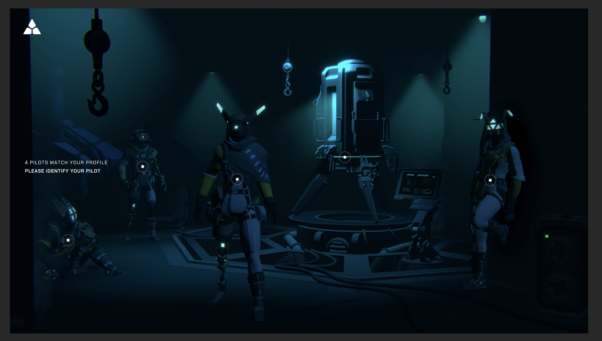
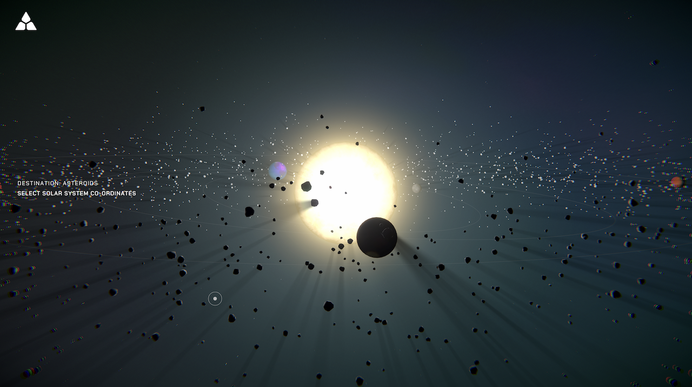

Fates is an immersive, narrative-driven universe that began with the launch of Exodus, its first experience. As a key member of the development team I took ownership of developing the Galaxy Map and Character scenes, while also contributing to other aspects of the project.

